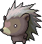

Lv. 43 · #4230502
흑저
하늘숲에만 서식하는 고슴도치의 일종이다. 호저와 매우 비슷하게 생겼지만 보다 짙은 색을 띄고 있으며 보다 강력하다. 별다람쥐와의 전쟁에서 가장 큰 공을 세운 두더쥐들로 두더쥐계의 전사 일족이라 할 수 있다. 하지만 멍청해 보이는 얼굴은 호저와 별다를 바도 없다.
스탯
레벨 43- HP
- 2,400
- MP
- 150
- EXP
- 103
- 넉백 가능 데미지
- 150+
- 물리 데미지
- 130
- 마법 데미지
- 0
- 물리 방어력
- 130
- 마법 방어력
- 160
- 속도
- -20
- 43레벨 에서의 필요 명중
- 54.99
- 메소
- 322.5
- 속성관계
- 미기재
- 체경비
- 23.30
- 형태
- 동물형
출현 지역
출현 맵 3개맵 이름을 누르면 메이플노트의 맵 정보가 열립니다.
드롭 테이블
전체 22개| 아이템 | 아이템 ID | 드롭 확률 |
|---|---|---|
| 바늘쌈지 | 4000278 | 50% |
| 하얀 포션 | 2000002 | 1% |
| 파란 포션 | 2000003 | 1% |
| 석궁전용 화살 | 2061000 | 0.8% |
| 활전용 화살 | 2060000 | 0.8% |
| 오팔의 원석 | 4020004 | 0.3% |
| 흑수정의 원석 | 4020008 | 0.1% |
| 마법의 가루(검정) | 4007007 | 0.03% |
| 마법의 가루(파랑) | 4007002 | 0.03% |
| 아대 제작의 촉진제 | 4130015 | 0.01% |
| 목비 표창 | 2070002 | 0.01% |
| 폴암 제작의 촉진제 | 4130009 | 0.01% |
| 한손도끼 제작의 촉진제 | 4130003 | 0.01% |
| 행운의 크리스탈 원석 | 4004003 | 0.01% |
| 올림푸스 | 1452008 | 0.008% |
| 다크 피에르타 | 1041083 | 0.008% |
| 다크 피에르타 치마 | 1061082 | 0.008% |
| 에메랄드 돔 | 1002024 | 0.006% |
| 크레센트 | 1442009 | 0.005% |
| 활 공격력 주문서 60% | 2044501 | 0.004% |
| 펫장비 점프력 주문서 60% | 2048004 | 0.004% |
| 브라운 더블트 부츠 | 1072303 | 0.0005% |
조건에 맞는 드롭 아이템이 없습니다.
확률은 메이플노트에 게시된 값입니다. 아이템 이름을 누르면 원본 아이템 정보가 열립니다. 과거 버전 데이터이므로 실제 메이플랜드와 다를 수 있습니다.